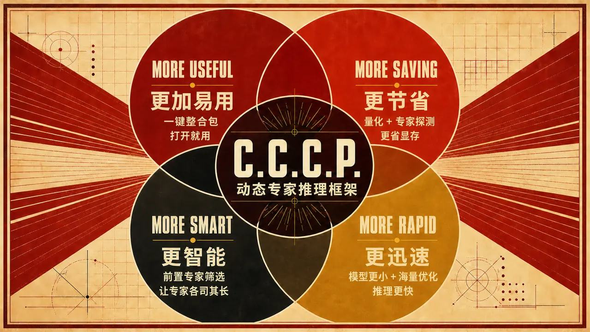
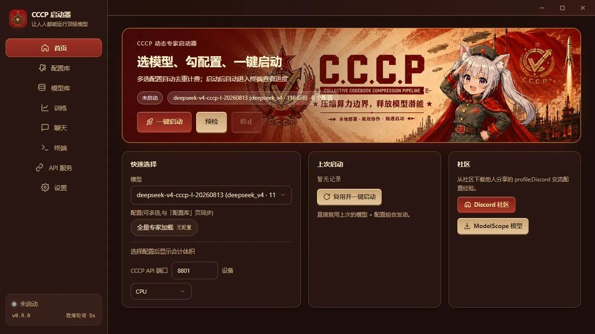

任务专用配置
使用角色扮演、代码或其他领域语料进行纯 prefill 路由扫描，依据命中热力图选择覆盖范围。
COLLECTIVE CODEBOOK COMPRESSION PIPELINE
动态专家推理框架与桌面启动器。依据任务语料生成可分享的专家配置，在不删减专家、不改动模型权重的前提下，让真正需要的专家常驻并保持完整路由能力。

CCCP 把“模型权重”和“任务配置”分开：配置记录模型名、版本、指纹和专家编号，便于分享、组合与复现；相同专家自动去重，完整专家集合仍然保留可路由。
使用角色扮演、代码或其他领域语料进行纯 prefill 路由扫描，依据命中热力图选择覆盖范围。
配置决定常驻专家集合，但不会裁剪模型权重或修改 top-k；容量不足时自动退到映射与磁盘兜底。
启动器、Python 运行时、CPU 算子与依赖统一封装。用户下载后双击 EXE，无需另装 Python。
CPU 为默认路径，并可按机器自动探测 NVIDIA CUDA 与 AMD ROCm/HIP 独立推理环境。
CCCP 提供完整的 OpenAI 兼容聊天 API 链路。任何允许自定义 Base URL 的 SDK、聊天前端或自动化工具，都可以直接连接本机模型。
http://127.0.0.1:8801/v1
GET /models列出当前已经启动的模型GET /models/{id}读取模型标识和上下文信息POST /chat/completions同步响应或 SSE 流式生成from openai import OpenAI
client = OpenAI(
base_url="http://127.0.0.1:8801/v1",
api_key="not-needed",
)
model = client.models.list().data[0].id
stream = client.chat.completions.create(
model=model,
messages=[{"role": "user", "content": "你好"}],
stream=True,
)
for chunk in stream:
print(chunk.choices[0].delta.content or "", end="")如果在启动器中启用了 API 鉴权，请把 not-needed 替换为启动器生成或设置的 Key。未启用鉴权时使用任意非空值即可。
以下 CCCP-S 数字来自 DeepSeek-V4-Flash-0731 的 WikiText-2 标准化评测；Mean KLD 越低越好，same-top 越高越好。所有数据已按官网视觉重新制表。
完整常驻 TP1×6 路径。在约 76.5 GiB 的体积下，同时取得更低的分布偏差与更高的 top-1 对齐率。
| 类型 | 模型 | 大小 (GiB) | Mean KLD ↓ | same-top ↑ | 执行方式 |
|---|---|---|---|---|---|
| CCCP | DeepSeek-V4-Flash-0731-CCCP-S | 76.473 | 0.291115 | 83.0846% | full-resident TP1×6 |
| MFQ | EW-V2-S | 77.519 | 0.313576 | 82.2913% | streamed TP1×6, B4 |
| UD | UD-IQ1_S | 76.871 | 0.645514 | 73.8110% | llama.cpp |
| UD | UD-IQ3_XXS | 97.051 | 0.306343 | 82.0150% | llama.cpp |
| UD | UD-IQ4_NL | 127.277 | 0.180695 | 86.0750% | llama.cpp |
对比值由公开实验表计算。6.92× 与 85.54% 以 284B 参数的 BF16 理论字节数为基线，不等同于官方混合精度下载包压缩率；CCCP、MFQ 与 UD 的执行路径不同，因此本组数据用于证明“体积—保真度”优势，不作为吞吐速度结论。
首页聚焦“选模型、勾配置、一键启动”；训练页按 token 扫描语料并输出专家热力图。截图来自 0.9.0 本地运行版本。

这里的“训练”只生成配置文件，不生成新模型，也不修改原始权重。超长上下文按 4096 token 块执行 prefill，并持续记录各层路由专家。
将含 cccp.json 的模型目录放入应用 models 文件夹，启动器自动识别模型与版本。
支持 UTF-8 JSONL / TXT；语料保存在本地，可在下一次启动时继续复用。
按 token 预算完成纯 prefill，查看专家热力图并拖动覆盖率估算配置体积。
配置带模型名、版本、指纹与专家编号，可导出分享，也可多选并自动去重合并。
动态专家配置、完整专家路由与离线推理环境的一体化桌面启动器。